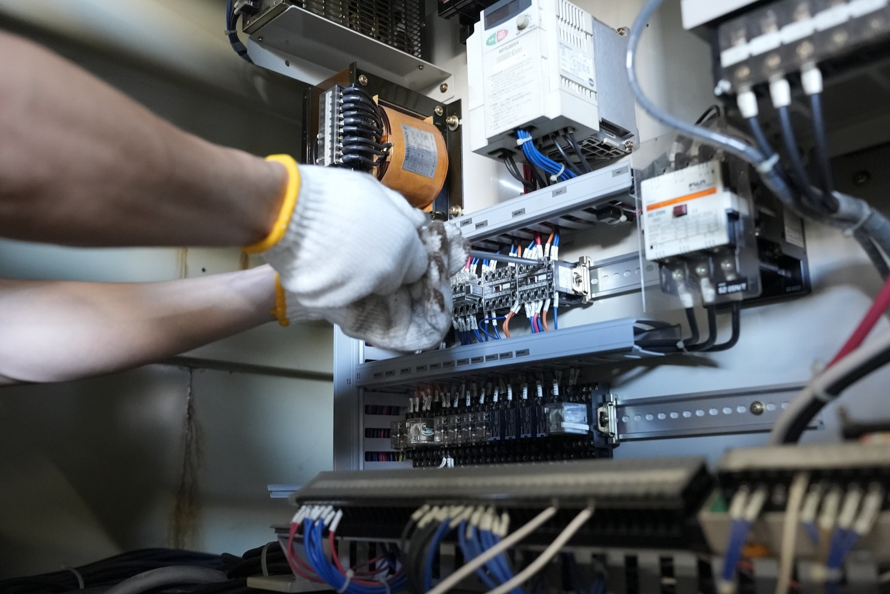
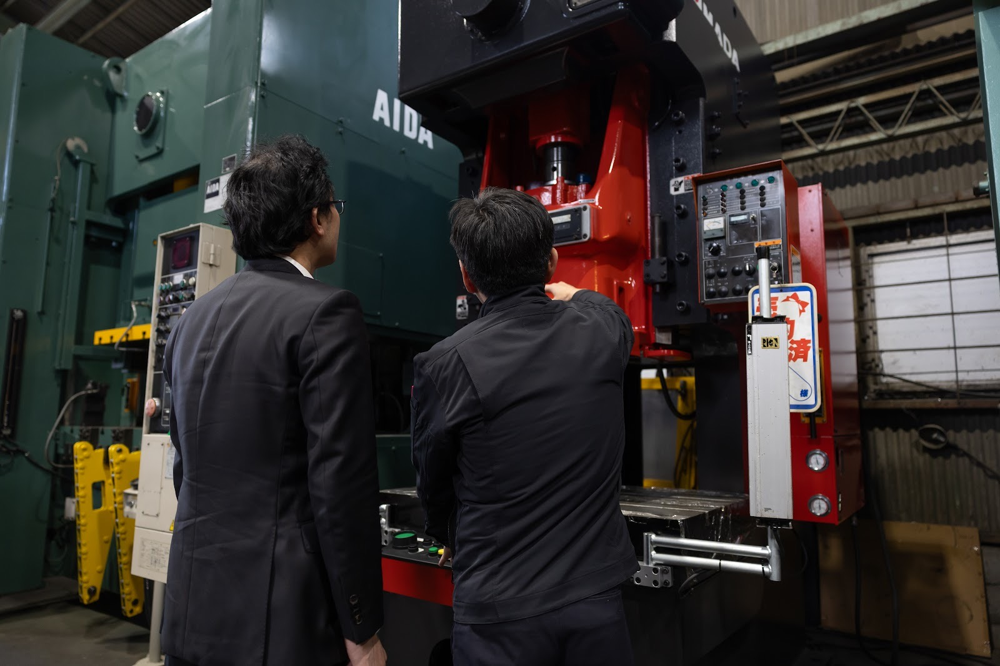
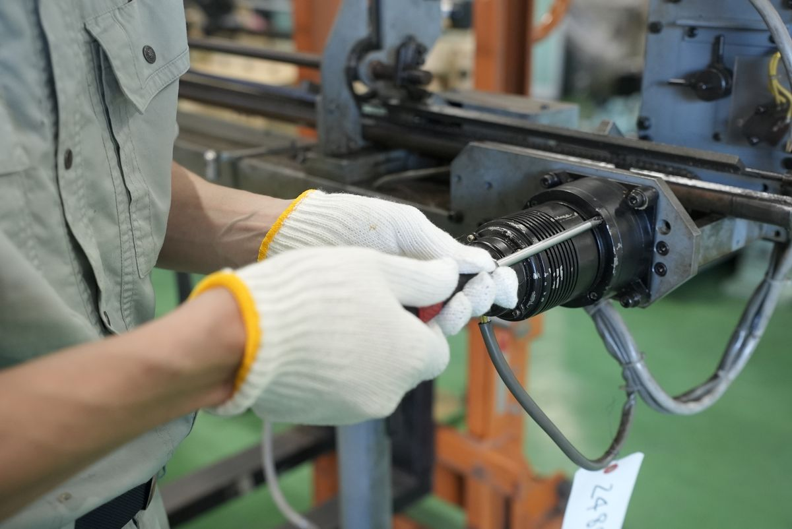
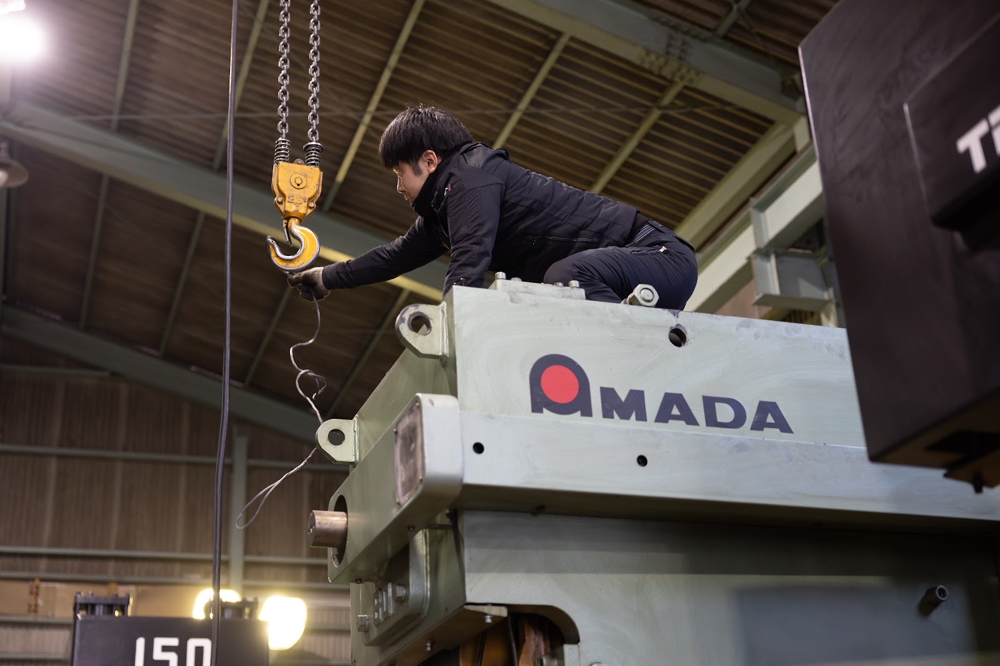

SERVICE
オーバーホール・
メンテナンス
サービス概要
機械の不調、その原因から見極める。
異音がする。振動が増えた。精度が出ない。アラームが出る。
機械の不調には、さまざまな原因があります。
シマモト技研では、まず現場で機械の状態を確認。
原因を探りながら、修理、部品交換、精度調整、オーバーホールなど、その機械に必要な対応を考えます。
故障したときはもちろん、できるだけ長く使い続けるための点検・メンテナンスまで対応します。

MACHINE DOCTOR
マシンドクター
機械を診て、原因を見つけ、直す。
異音や振動、精度のズレ。
工作機械にも、調子が悪くなる前のサインがあります。
シマモト技研では、音や動き、精度などを確認しながら、どこに原因があるのかを探ります。
修理、部品交換、調整、オーバーホール。機械の状態を見たうえで、必要な方法で使える状態へ戻します。
故障してから直すだけでなく、定期的に状態を見ることで、大きなトラブルを防ぐことにもつなげます。
診る
音、振動、動き、
精度から機械の状態を確認します。
見つける
どこが悪いのか、何が原因なのかを探ります。
治す
修理、部品交換、調整、
オーバーホールを行います。
FEATURES シマモト技研のオーバーホール・メンテナンスの特徴
FEATURE 01
まず現場を見て、原因を探る。
メーカーの回答を待っている間も、機械が止まれば仕事は進みません。
シマモト技研では、まず機械の状態を確認し、不調の原因を切り分けます。
その場で対応できる修理や調整は行い、メーカー対応が必要な場合も、原因を整理したうえで次の対応につなげます。
CASE
- メーカーから一次回答まで時間がかかると言われた機械を現地確認し、不調の原因を特定。
- アラームや機械の動きを確認し、その場で調整・簡易修理まで対応。

FEATURE 02
買い替える前に、まだ使える方法を考える。
古くなった機械でも、状態によっては修理やオーバーホールで使い続けられます。
分解・点検を行い、摩耗した部品の交換や精度調整などを実施。
買い替えだけを前提にせず、今ある機械を活かす方法を考えます。
CASE
- メーカーから高額な設備更新を勧められた機械を、オーバーホールして継続使用。
- メーカーサポートが終了した旧型機を分解・調整し、必要部品を手配して再稼働。

FEATURE 03
他社で買った機械も、対応します。
シマモト技研で販売した機械だけではありません。
他社から購入した機械や、メーカーサポートが終了した古い設備も、状態を確認したうえで対応方法を考えます。
CASE
- 他社で購入した工作機械の不調を確認し、修理・調整まで対応。
- メーカー対応が難しい旧型機を点検し、必要な部品交換・調整を実施。

SUPPORT SCOPE こんな機械の不調、ご相談ください
- いつもと違う音や振動がする
- アラームが出て機械が動かない
- 加工精度が出なくなった
- 動きが悪い、途中で止まる
- 長く使っているので一度見てほしい
- メーカーサポートが終了している
- 他社で購入した機械を直したい
- 修理するか、買い替えるか迷っている
※メーカー、機種、機械の状態、部品の入手状況などを確認したうえで、対応可否をご案内します。
FLOW ご利用の流れ
お問い合わせ
メーカー、機種、症状などをお知らせください。
症状の確認
いつから、どんな不調が出ているか確認します。
現地確認
機械を確認し、不調の原因を探ります。
修理方法・お見積り
必要な作業と費用をご案内します。
修理・メンテナンス
修理、部品交換、調整などを行います。
動作確認
作業後の動きや精度を確認します。


MACHINE STOCK
中古機械百貨店 現在販売中の中古工作機械はこちらCLOSURE SUPPORT
廃業支援サービス 工場の整理・設備・手続きまで製造業の廃業を総合支援。